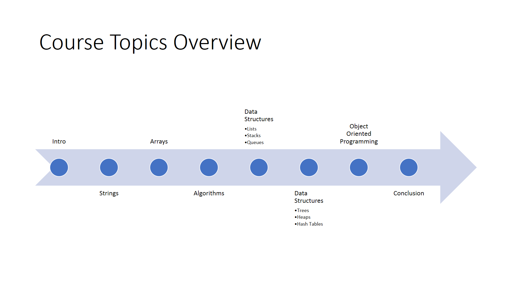

About me:
I am a student at the University of California Irvine majoring in Computer Science graduating June 2018
I am interested in pursuing a career in software engineering, whether it’s design or nitty gritty low-level systems engineering 😊
My interests include art, programming, memes, and music ♫
Here are some of my programming related skills listed by familiarity:
- C++
- C
- Java
- HTML5
- CSS3
- UI/UX
- Python
- Android Programming
- JavaScript
- UNIX
- git
- Algorithms
- command line
- Socket programming
- x86 Assembly
- MySQL
- AWS
- Graphics Programming
Non-programming related skills:
- Drawing
- AutoCAD
- Drafting
- SolidWorks
- Guitar
- memes
- Public Speaking
- Debating
- Bilingual: Spanish
NavFeel: Emotional Search & Recommendation project (2018)
 Images of the login, new entry, and calender page for NavFeel
Images of the search, search results, and recommendations page for NavFeel
Images of the login, new entry, and calender page for NavFeel
Images of the search, search results, and recommendations page for NavFeel
Implemented an Emotional diary and analysis tool that provided basic search and recommendations to the users of the application. My four person team coordinated the version control using Git.
A custom python script was used to generate realitic data for date, times, locations, and temperatures. The Twitter API was used to collect text that would correspond to a certain emotion.
The user interface was developed using Android Studio mobile application. The emotion button images were created using Inkscape which is free open-source image editing software.
The middle-end was made using Java servlets, this component helped process the backend database (MySQL) requests coming in from the mobile application. The web requests were tunneled into our webserver using a tool called ngrok.
- Android Studio
- Python
- Github
- git
- ngrok
- MySQL
- HTML
- Java
- Tomcat 9.0
- Twitter API
- OpenWeatherMap API
- Android
Traditional Search: Web Crawling & Search Engine Project (2018)
Images of the web crawler summary and a preview of the webcrawler output.
 Images of the parser/tokenizer source code and output produced by the search engine
Images of the parser/tokenizer source code and output produced by the search engine
Wrote a webcrawler to crawl the ics.uci.edu domain. Recorded analytics about the frequency of outlinks, dead-ends, crawler traps and more. The crawler used the spacetime-crawler, a python framework, as a base for the crawler.
I implemented a basic multi-threaded version of MapReduce to help parse and index about 1.0gb of data in 10 minutes. The parser combined some python libraries like lxml and some regx to filter web information.
The Search Engine ranks web results based on it's weighted tf and weighted idf score. The engine can also handle multi-word search queries.
The front-end was designed using a popular python library called tkinter. The links results were also made into hyper-links so that users can see results in their default browser.
- Python
- MapReduce
- multi-threaded
- Inverted Index
- Serialization
- Pycharm IDE
- git
- tkinter
- spacetime-crawler
- Analytics
- regx
- lxml
- xPath
Fablix: Full-Stack e-commerce site (2017)
 Images of the login page for Fablix
Images of the login page for Fablix
Implemented a fully scalable movie ecommerce website that can perform to the standards of most high traffic sites. This was acheived by load balanceing several instances of Tomcat using an Apache server.
Most of the website content was retreived by parsing through a large XML movie dataset.
We deployed the site on the AWS cloud platform. Our site was very sercure by using practices like https and reCAPTCHA for user authentication.
A corresponding Android Mobile App was also made with similar functionality to the Fablix website.
- MySQL
- HTML/JSP
- CSS
- JavaScript
- AWS
- HTTPS
- ReCAPTCHA
- Java
- Tomcat 8.0 - 9.0
- Apache
- Command line
- Android
Programming Art: with python PIL library (2015 - 2017)

 Images above made using parametric equations
Images above made using parametric equations
 Visual representation of my custom knn algorithm
Visual representation of my custom knn algorithm
The first three images were all produced programmatically using a simple set of equations that ultimately produced a beautiful output.
Wrote a naive implementation of a knn algorithm that uses a set of overlapping gaussian distributions to classify a data set.
All these images were created by using Pillow (formerly known as PIL) a Python image manipulation library
Graphics programming: with OpenGL
Small toy model of the solar system
I wrote a 3D graphics program using the OpenGL API. I created a system of equations that would create a heuristic model of the solar system planets and the Earth's moon.
I used the 2011 standard of the C++ programming language. I wrote the program to adhere to object oriented programming principles.
- Equations
- knn
- gaussian
- algorithms
- Python
- Image manipulation
- RGB math
- Solar System
- OpenGL
- C++
- 3D graphics
- OOP
MICP: Microsoft Interview Coaching Program (summer 2017)

timeline of events for MICP
 1st: screenshot of repositories related to MICP. 2nd: screenshot of CATCH library
1st: screenshot of repositories related to MICP. 2nd: screenshot of CATCH library
Worked with full-time experienced interviewers from Microsoft for 8 weeks to learn the basics of the interviewing process.
TEBOW IT: Test Examples Brute Force Optimize Walk through - Implement Test
Started off with the basics of programming such as strings and integer manipulation and ended with algorithms, data structures, and object oriented programming. All the lessons where given by an experienced full-time software engineer at microsoft.
I was coached to use TDD (Test Driven Devolopment), I choose CATCH as my C++ testing platform. We were also given lessons on source control using Git and github.
- Interviewing
- TDD
- github
- Git
- Algorithms
- OOP
- Data Structures
- C++
- CATCH
- Microsoft
- TEBOW it

{kind=link}
{kind=link}
{kind=link}
{kind=link}
{kind=link}
{kind=link}
{kind=link}
{kind=link}
{kind=link}
{kind=link}
{kind=link}
{kind=link}
{kind=link}
{kind=link}